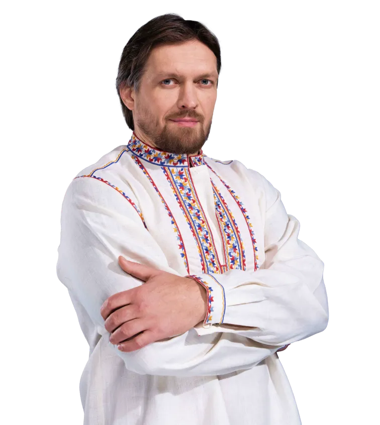
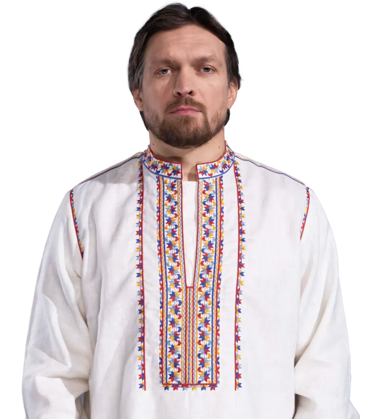
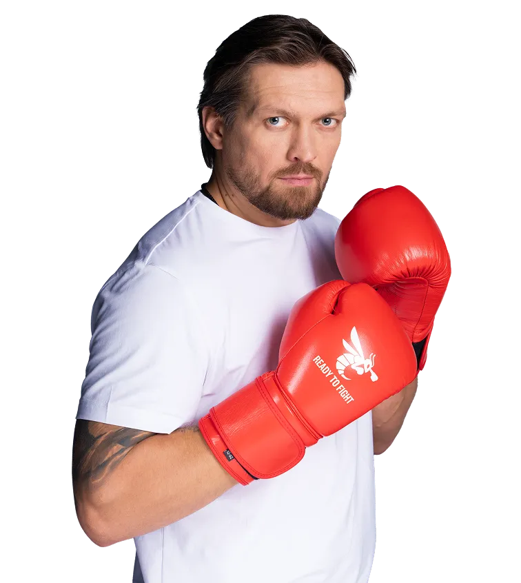
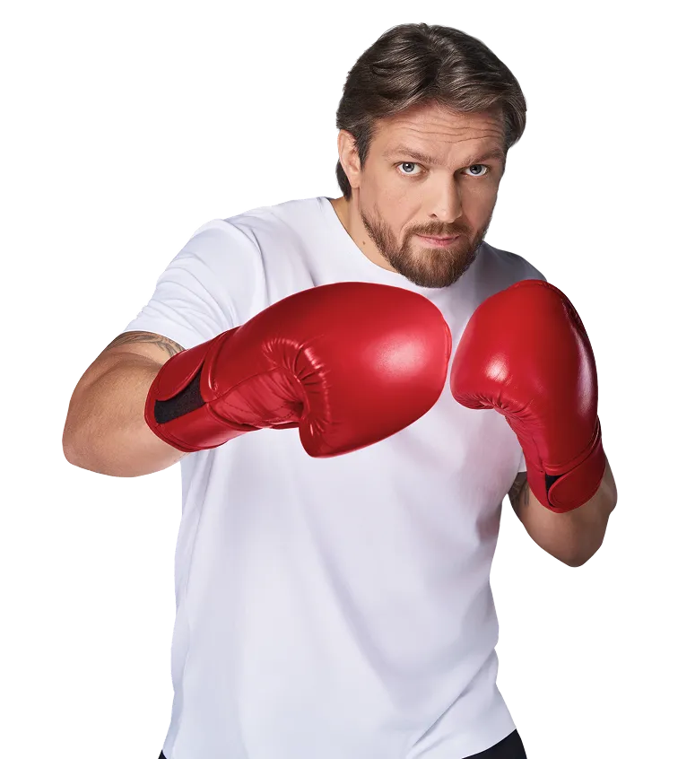
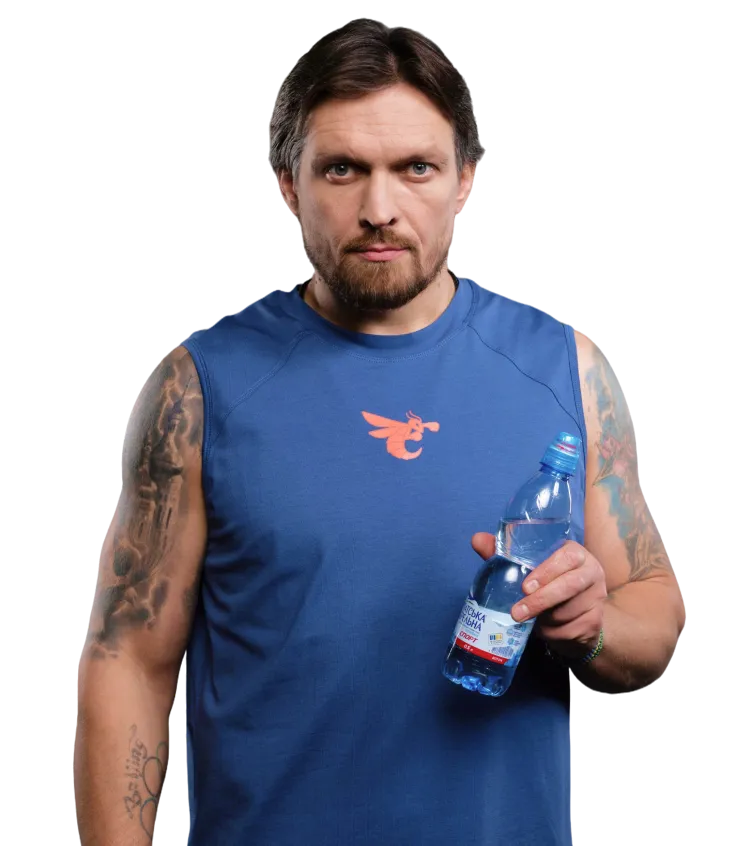
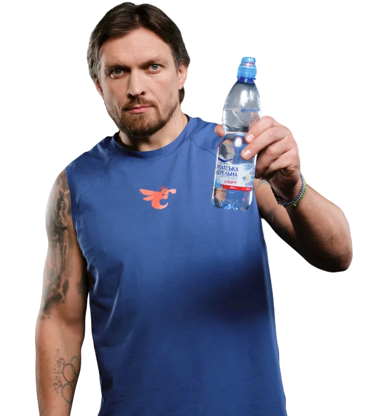

Сила вірити


Віра — це те саме джерело, що підживлює внутрішню стійкість
Це вода, яка підсилює кожен ваш крок на шляху до мети. Підтримує у моменти напруги та допомагає відновити сили після найскладніших викликів. З нею легше тримати темп, не здаватися і щодня ставати кращою версією себе.
Бо справжня сила — це не про м’язи. Вона починається зсередини: з чистоти, витривалості та рішучості.


Віра — це те саме джерело, що підживлює внутрішню стійкість


Успіх — це крок за межі власного «не можу»


Допомога — це здатність підставити плече та помножити силу на двох